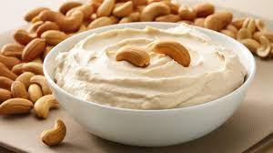

Creme de leite vegetal

Ingredientes
- 100 g de castanha de cajú
- Água quente para o demolho QB
- 300 ml de água
Modo de preparo
- Deixar as castanhas de cajú em demolho na água quente por 30 minutos a 1 hora. Descartar a água.
- Bater no liquidificador as castanhas hidratadas com 300 ml de água até ficar bem lisinho.
Observações
- Durabilidade: 5 dias refrigerado ou 3 meses no congelador.
- O creme de leite vegetal ganha consistência quando levado ao fogo.